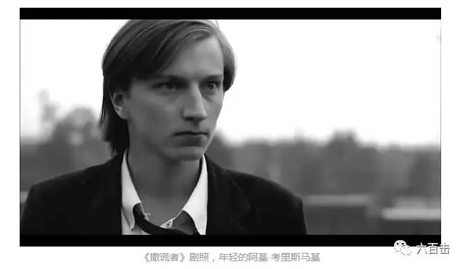
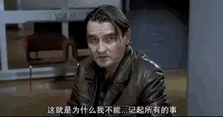
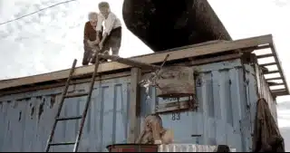
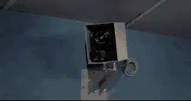
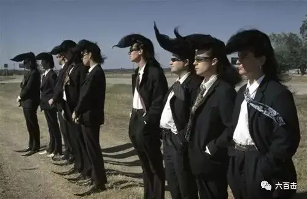
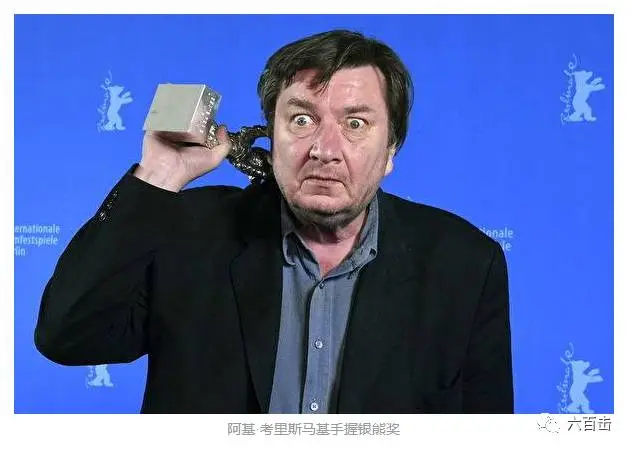
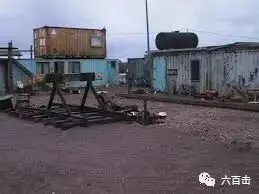
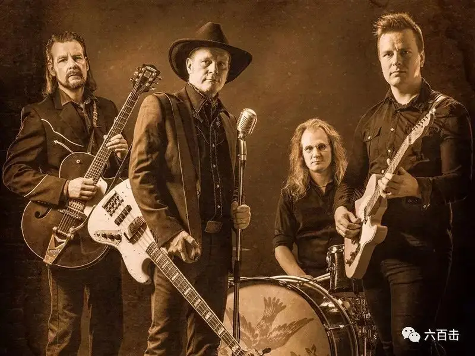
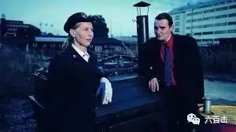

有些人的电影辨识度极高，看几分钟后，你能立马识别出这是谁拍的电影，而芬兰国宝级导演阿基.考里斯马基就是这样的人，他被誉为二十世纪最后一位作者导演。这位古怪的“冷面笑匠”更是各大电影节获奖专业户，电影风格浓烈独特，无论是早期的“失败者三部曲”，还是中期的“当代芬兰三部曲”，以及最近的难民电影，都是围绕社会底层人物展开叙事，都发生在他居住的城市赫尔辛基，电影女主角大都由卡蒂·奥廷宁扮演，场景中几乎看不到任何现代化标识的东西，演员表演几乎面无表情，却在严肃的讲着冷笑话，固定机位的单镜头，还有老基御用的乐队........

其中，我最为喜欢的是《没有过去的男人》，本片获得第55届戛纳电影节评审团大奖以及基督教人道主义精神奖，讲述的故事也非常的简单，一位无名的男子到达赫尔辛基，他被人痛打了一顿，失去了记忆。他无法再记起自己的名字、身份，过去对于他成了一片空白。他因此不能得到工作，也租不到房屋，他只好住在郊外的集装箱中，并认识了救助站姑娘厄玛，并最终走在了一起。今天我们就通过这部电影领略一下这位北欧怪人的魅力。
1、极简主义美学
阿基.考里斯马基的电影风格受到很多导演的影响，而演员近乎抑制所有情感流露的表演以及喜欢用简洁的电影叙事去表达意图的方式，更多受到皮耶·梅尔维尔与罗伯特·布列松的影响。他所有的电影没有宏大的场面和背景，故事和人物近乎简化到抽象的地步，台词用得相当节制，常常通片也不过200来句，并且，对白的演员永远面无表情，甚至动作举止也是僵硬而呆板。

2、现实主义描绘
考里斯马基自己就是出生于贫穷的家庭，他自己体验过真正的贫穷，70年代时常常饿肚子，无家可归，这让他对底层边缘人感同身受，难怪老基近期的创作都是围绕弱势的难民群体，阿基·考里斯马基说：“你知道，如果我不为这个现状做点什么，我几乎没有勇气再照镜子。当然他也受到意大利新现实主义的影响，他这样告诉本刊记者：“对我来说，意大利新现实主义是整个电影历史中最重要的时期，尤其是德·西卡，以及所有那些他的电影背后的人们，比如编剧扎瓦堤尼（Cesare Zavattin），他们对我的电影观念的形成都意义重大。”但是老基电影镜头下的人物却比德西卡温暖，“这世界已经足够悲惨，不需要我去再怎么强调，我最希望做到的是给人们带来点希望”
《没有过去的男人》中刻画的世界是残酷的，这些贫穷人落魄的住在集装箱中，警察竟然还不会放过他们，会来收房租，老基电影里的上层人物以及政府公职人员往往是冷漠的，而这些穷苦人却是充满爱心和热情，这样反衬出的人的尊严也格外耀眼，他说：“我让片中的人们保有尊严，有意让他们越是遭受社会或任何人的践踏时，越能反讽地去应对，在我看来，正因为如此，他们才能超越那些折磨他们的人，也让他们甚至还有能力去自嘲一下自己的悲惨。”
我们来看一下这些人在集装箱中的生活，充满本真和乐趣，看到这个场景，我觉得非常温暖，想到自己蜗居在上海的钢筋水泥之中，还真羡慕上海能有这么一片集装箱生活营，可惜的是，在上海这么干，会被城管吊打。

3、几乎不运动的固定长镜头
老基受到新现实运动的德西卡影响，但是德西卡的镜头常常是跟着人物在运动，而考里斯马基的镜头却非常少运动，多半是单镜头固定机位，甚至常常是以固定镜头为前提，人物在“画框”内出入，很多剧情的交代甚至直接利用了画外音。很多研究者把这“东西杂糅”的独特影像风格和考里斯马基19岁那年从芬兰跑去伦敦专程看的一场《东京物语》（小津安二郎）联系在一起。而这样的镜头语言也正好契合了老基“冰冷的炙热”
4、严肃的幽默
老基的幽默是冷的，是静止的表达，是由“流浪汉”穿着笔挺的西装，面无表情的讲出来的，他的幽默是有尊严的，也是一种底层人物的优雅。

而就是这样的表演风格，却让永远面无表情的“扑克牌女王”卡蒂·奥廷宁摘取了戛纳影后。当然除了冷幽默之外，老基也有戏谑的时候，来看一下他造出来的世界上“最烂的乐队”

而他本人今年在柏林电影节上喝高了，拿着奖杯是这样的

5、剥离现代化符号的赫尔辛基
老基坦言： “就我个人而言，我没有看到整个技术革命给芬兰，或者其他国家带来任何好的影响。既然我们的头脑停留在石器时代，那么没有必要让混乱的经济和技术进步再把我们的问题搅得更加复杂。况且，我对城市是饱含感情的，而我的灵魂几乎无法忍受直面当下赫尔辛基的粗糙，我只好将城市设定为几十年前的样子，甚至也不能忍受一辆现代化的汽车，因为它们实在太丑陋太冷漠了。我想我的摄影机是有选取性的，它尽可能展现时代中所有的野性。”
《没有过去的男人》中的赫尔辛基 抹去了所有现代化的符号，没有高楼大厦，没有手机电脑，甚至街上的汽车、市民的衣着也老旧不堪，穷街和陋巷倒是镜头最中意的景致，冰冷的黑夜里，死气沉沉的建筑，无人的街道，以及那些面无表情的主人公们，生活得机械而麻木。似乎只有这般冷峻至极的影像，才包裹得下考里斯马基那厚重而复杂的社会意识和个人精神。

5、御用乐队
老基的电影中，一定有乐队，一定有歌曲，看似无关紧要，但对于考里斯马基电影里一贯的木讷沉默的角色来说，歌曲才是他们的内心独白，而歌词也和电影情境有着千丝万缕的联系，考里斯马基电影的奇妙正是得益于他对于声画的娴熟处理，也源于他对音乐的无限热爱。
而Marko haavisto & poutahaukat正是考里斯马基电影的御用乐队。Marko haavisto & poutahaukat的音乐配器简单，节奏轻快，旋律优美，主唱嗓音醇厚生动，富有磁性。音乐中洋溢着洒脱不羁的激昂情绪和挥斥方遒的浪漫情怀，一反商业流行音乐编曲上的奇巧淫技，以纯粹的复古怀旧基调直抒胸臆。

而在老基今年的获奖新作《希望的另一面》，引入了酷意十足的Dumari ja Spuget乐队，更是让人耳目一亮，一起感受一下。
6、基督教伦理下的爱情故事
本片中有一个有趣的组织，就是救世军，我们看一下这是一个什么样的组织，“救世军（The Salvation Army）是一个于1865年由卜维廉、卜凯瑟琳夫妇在英国伦敦成立，以军队形式作为其架构和行政方针，并以基督教作为信仰基本的国际性宗教及慈善公益组织，以街头布道和慈善活动、社会服务著称。其当初成立时所使用的名称是“东伦敦基督教传道部”（East London Christian Mission）。它有一个称呼，为“以爱心代替枪炮的军队”。它的创办人希望能够把福音传给穷困的人，并透过了解穷人们物质及心灵之需要来给予帮助。”

而本片男主被打失忆，也有极强的象征意义，电影最后警察帮助男主找到了他原来的家人，讽刺的是他原来竟然是一个好吃懒做的赌徒。我想老基借着失忆一方面要象征他对冷漠懒惰的上层人士的决裂，另一面也借着失忆表现基督教信仰之下的重生，他不在是一个冷漠自私的赌徒，而是和底层边缘人互帮互助的好人，而救世军救助站姑娘厄玛在爱上男主后，得知他有自己的家庭，并没有去占有他，而是尊重他，让他去寻找自己曾经的妻子，这些都是基督教伦理之下的温暖和舍己。
关注并回复：
没有过去的男人获取电影资源